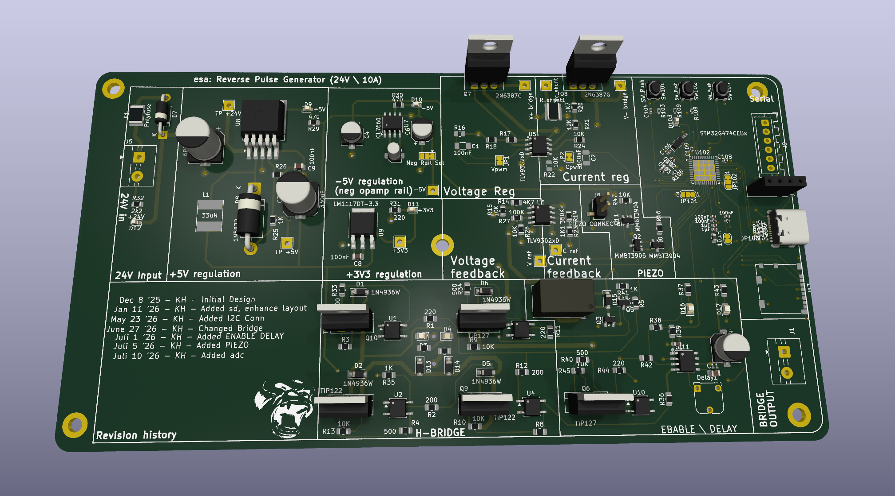
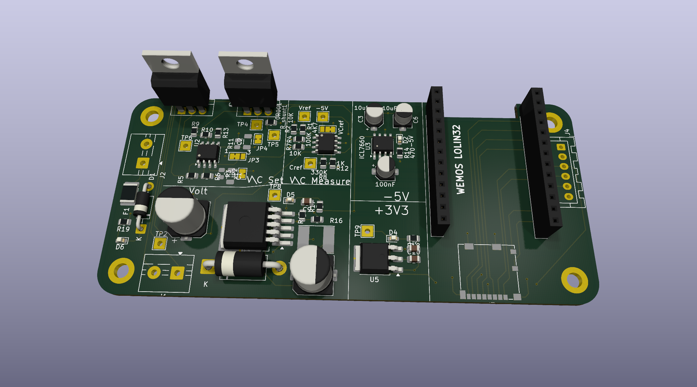

Portafolio — Santa Ana, Costa Rica
Proyectos que hemos diseñado y construido.
Una muestra de los equipos y sistemas en los que estamos trabajando actualmente, y de los que iremos sumando con el tiempo.
Proyecto actual — 2026
Máquina de galvanoplastia de pulso inverso para el desarrollo de PCB
Un equipo de electrónica de potencia diseñado y construido por nosotros, usado en nuestro propio proceso de producción de placas.

Qué hace
Al electroplatear una placa PCB, el patrón eléctrico que se usa durante el proceso es tan importante como el químico: un pulso mal controlado produce un depósito de cobre desigual o de mala calidad. Este equipo genera y controla ese patrón — incluyendo pulsos inversos — para que el proceso de plateado sea preciso y repetible.
La placa mostrada es el resultado final que diseñamos y construimos: incluye su propia etapa de potencia (puente H con salida de hasta 10A a 24V), regulación de voltaje multi-riel (+24V, +5V, +3V3 y un riel negativo de -5V para los amplificadores operacionales), realimentación de voltaje y corriente para controlar el proceso en tiempo real, y un microcontrolador STM32G474 que coordina todo el ciclo.
Ficha técnica
Historial de revisiones
El diseño ha ido evolucionando por etapas, agregando funciones a medida que el proceso de producción lo fue exigiendo.
- Dic 8 '25Diseño inicial
- Ene 11 '26Se agregó tarjeta SD y se mejoró el layout
- May 23 '26Se agregó conector I2C
- Jun 27 '26Cambio en el diseño del puente H
- Jul 1 '26Se agregó retardo de habilitación (enable delay)
- Jul 5 '26Se agregó indicador piezo
- Jul 10 '26Se agregó lectura ADC
Proyecto anterior
Fuente de poder programable de alta resolución, 0–12V
Una fuente de banco controlada digitalmente, con ajuste y medición de voltaje y corriente por software.

Qué hace
Esta fuente permite fijar y medir el voltaje y la corriente de salida de forma digital, en lugar de con potenciómetros manuales. Un módulo ESP32 (WEMOS LOLIN32) gobierna el punto de ajuste (set) y lee la medición real (measure) tanto de voltaje como de corriente, lo que permite un control de alta resolución sobre la salida, de 0 a 12V.
El diseño incluye su propia referencia de precisión para los circuitos de ajuste y medición, un riel de -5V generado con un inversor de carga conmutada (ICL7660) para alimentar los amplificadores operacionales, y regulación de +3V3 para la lógica de control. La corriente de salida se mide mediante una resistencia shunt.
Ficha técnica
Próximos proyectos
Más proyectos, en camino
Este portafolio se irá actualizando con cada nuevo equipo que diseñemos y construyamos.
Próximamente
Estamos preparando más proyectos para mostrar aquí.
Próximamente
¿Tenés un proyecto en mente? Contanos qué necesitás.